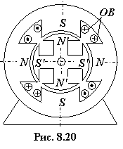

8.6.4. Шаговый микродвигатель
В различных системах автоматики для преобразования управляющих импульсов в заданный угол поворота применяют синхронные микродвигатели, в которых магнитное поле статора вращается не равномерно, а поворачивается дискретно при подаче управляющего сигнала. При этом вращающий момент резко изменяется во времени и имеет форму импульсов, а ротор совершает дискретные перемещения. Такие СД называют импульсными или шаговыми.

Шаговые СМД выполняют как с активным (имеющим обмотку возбуждения постоянного тока или постоянные магниты N'–S' (рис. 8.20)), так и с пассивным («реактивным») ротором. Ротор ШСМД всегда имеет явнополюсное исполнение. Статор ШСМД выполнен с явно выраженными полюсами N−S (см. рис. 8.20). Обмотка ОВ статора питается от сети постоянного тока через коммутатор, формирующий напряжение прямоугольной формы с чередующейся полярностью. При подаче импульса напряжения полюсы ротора устанавливаются против возбуждённых полюсов статора, по которым протекает ток. Каждый импульс тока ОВ приводит к повороту ротора на угол 90° (на один шаг). Причиной этому является вращающий момент, создаваемый в двигателе в результате взаимодействия кратковременно формирующихся полюсов вращающегося магнитного поля статора с полюсами ротора.
Увеличивая число полюсов статора и ротора (а их числа должны быть одинаковыми), добиваются нужного шага вращения ротора. Из-за достаточно крупного шага (15...90°) и большой пульсации момента шаговые двигатели с активным ротором применяются реже, чем шаговые реактивные двигатели. Шаговые реактивные двигатели позволяют получить до 200 шагов в секунду, что связано с возможностью получения большого числа зубцов невозбуждённого ротора.